CloneBot V2 🔥
CloneBot V2 is inspired from MsGsuite's CloneBot, which got out-dated and having too many errors in it. We both created it to keep the legacy of CloneBot alive! The bot who helped thousands for cloning their data.❤️
1. The Powerful Telegram Bot based on Gclone to clone Google Drive's Shared Drive data easily.⚡
2. CloneBot V2 usage Service Accounts to easily clone TBs of data without hitting 750GB Upload/Clone limit of Google Drive.♻️
3. It is most lightweight and performs only server-sided cloning to have very less load on system and don't use your own bandwidth.🗃️
4. Just provide the sharing link of a particular Shared Drive/folder or file and set multiple destination folders to clone data.🔗
📑 INDEX
Easily navigate through out the guide and learn about Powerful CloneBot V2 and terms related to it.
->🐳Build or Deploy using Docker
🆕 What's New!
1.Gclone upgraded to v1.59.1 (latest)!😉
2.UI Changes!🌟
3.CloneBot V2 is now confortable with Python 3.10.6🐍.
4.Resolved $PORT listening Errors in Okteto and other platforms.⚙️
5.Old Docker Image ghcr.io/thecaduceus/clonebot_v2:main is now no more supported and deprecated!🧹
6.Lots of other fixes, changes and improvements which can be checked in Changelog.
Full Changelog: V2.1.4...v2.2.9
⛔ NOTICE
1.You may need account for Heroku/Okteto/Scalingo while deploying CloneBot V2 on respected platforms.
2.Service Accounts are mandatory to use CloneBot V2, because it uses Service Accounts to prevent hitting 750GB Upload/Clone limit of Google Drive while cloning large amount of data.
3.VPS or your local machine (PC or Laptop or Mobile) should have Python 3 and Git installed in order to run CloneBot V2.
4.CloneBot V2 don't use your bandwidth or Internet connection while cloning data but it can if hosted on your local machine or VPS for calling required Telegram APIs to update the progress or to generate required response.
5.This Project comes with GNU License, please consider reading it before using this.
6.Name of zip file should be only accounts.zip and it should only contain .json files not folders!
7.Use your own Docker Image for deploying on VPS or local machine! using your own Docker Image for deploying on platforms like Heroku, Okteto or Scalingo will cause Account to be suspended. In that case use Repository's official Docker Image.
8.Don't get confused! If you use pip to install requirements.txt then only use py or python for executing commands or in the same way if you use pip3 then only use python3.
⚙️ How to use?
CloneBot V2 is very straight forward and easy to use bot. If you deployed your CloneBot V2 then consider adding commands in it through @BotFather to make it easy for other users to know bot commands, here is the commands list to be set in @BotFather:
1.First convert accounts folder of your Service Accounts into accounts.zip then send it to bot and write /sa in caption or send /sa as reply to accounts.zip file. Don't have Service Accounts? Learn here how to create
2.Now Send /folders to your CloneBot V2 and then bot will show Shared Drives name in which you added your Service Accounts's Google Group, select Shared Drive or directory available in it as destination. Not added Service Accounts in Google Group? Learn here how to do.
3.Your CloneBot V2 is now ready to be used! just send any Google Drive sharing link and select the Destination folder you set before to clone data in it.
4.Additionally, /ban and /unban command is to unauthorize or authorize user again and /id command is to get your Telegram User ID.
⛔NOTE: Each allowed user have to upload their own accounts.zip to use CloneBot V2.

🫙Making Shared Drive
CloneBot V2 comes with the ability to clone data between My Drive to Shared Drive or Shared Drive to Shared Drive, but in both case Shared Drive is common & required! So lets see how we can create our own Shared Drive for free to use them with CloneBot V2.
First visit MsGsuite's Shared Drive Generator Website or you can also use MsGsuite Shared Drive Generator Telegram Bot to create Shared Drive.
🌐Using Website:
1.Open Website and provide details stated below:
Shared Drive Name: Enter Name which you want to give to your Shared Drive. It can be anything but avoid using Emojis to prevent UTF-8 Errors
Gmail ID: Enter your Google Account's Email ID for which you want to create Shared Drive.
Domain Selection: Using drop-down list, select a working domain through which you want to create Shared Drive, or if you are not sure then keep it as Random.

2.Once done! Solve hcaptcha to prove that you are human and then click CREATE.
3.After creating, add Google Group of your Service Accounts in that Shared Drive to use it with CloneBot V2. Don't know how to? Learn Here

4.All problems or Error codes related with MsGsuite's Website with their solutions are listed here.
🤖Using Telegram Bot:
1.Open MsGsuite's Telegram Bot on Telegram and send /start, then click CREATE TD.
2.Now provide your Gmail ID for which you want to create Shared Drive and then give name to your Shared Drive.
3.After giving required details! Bot will ask you to either select domain randomely or manually! select as per your choice. Finally! You done it.😘

⛔NOTE: Shared Drive is a temporary storage! use it carefully and keep backup of your data always with you.
🐍Python with PIP Installation
Generally, I seen people, blindly running and ignoring options provided by Setup for installing Python and PIP which is most important thing to make Service Accounts or to run CloneBot V2. People like it are just there to flood out support chat and abuse moderators too! Hence I made this Section to tackle this special disease. Lets name this disease Setup-Blindness😂
1.Run the Python Setup again and click Customize Installation:

2.Now select all options as shown in the image and click Next.

3.Again! choose following options and click Install and you done it!

4.Above steps solves below Errors:
'python3' is not recognized as an internal or external command,
operable program or batch file.
'python' is not recognized as an internal or external command,
operable program or batch file.
'py3' is not recognized as an internal or external command,
operable program or batch file.
'py' is not recognized as an internal or external command,
operable program or batch file.
'pip3' is not recognized as an internal or external command,
operable program or batch file.
'pip' is not recognized as an internal or external command,
operable program or batch file.
⛔NOTE: One dose is sufficient to cure this! Don't take it personally.😂
🕹️Deployment
Deployment of CloneBot V2 is as simple as its usage! Their are many methods listed below to deploy CloneBot easily, but before you deploy it, you need some values listed below and how to get it:
path_to_gclone - Path to gclone file, by default it is gclone or change it if you using different one.
telegram_token - Get your bot's Telegram API Token from BotFather.
user_ids - Telegram User IDs of users who can use your CloneBot_V2. Separate them using , and first User ID is Admin.
group_ids - Telegram Group IDs of Groups in which CloneBot can be used otherwise keep it -1. Separate them using ,
gclone_para_override - Keep it blank if you don't know what it is.
📄Getting CONFIG_FILE_URL
CONFIG_FILE_URL is URL to config.ini file which contains values of variables discussed above, lets see how to get your CONFIG_FILE_URL easily:
1.First open sample-config.ini file then copy its code.
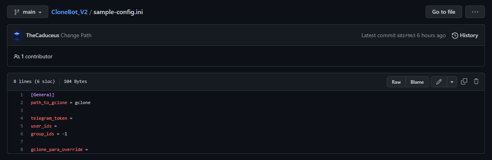2.Now open GitHub Gist and create a new gist and paste the code you just copied and name it as config.ini and now fill below values carefully:
path_to_gclone - Keep it as gclone.
telegram_token - Enter Telegram Bot Token, get it from @BotFather.
user_ids - Enter User IDs, which you want to allow your CloneBot V2. Separate IDs by , and first ID is Admin.
group_ids - Enter Group IDs, in which you want to allow your CloneBot V2 to be used otherwise keep it -1. Separate IDs by ,
gclone_para_override - Keep it blank if you don't know what it is.
3.Then press Create Secret Gist then click Raw, it will open a New Tab in your Browser. Just copy the URL of that New Tab
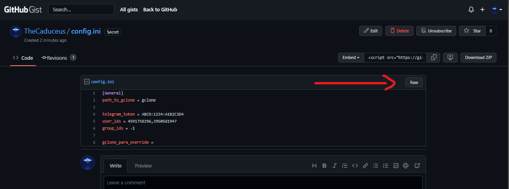
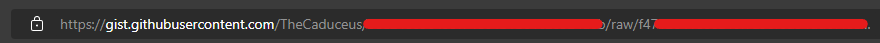
4.Once you copied the URL! then remove Commit_ID from the URL:
Before:
https://gist.githubusercontent.com/UserName/0ee24eXXXXXXXXXXXXXXX6b/raw/Commit_ID/config.ini
After:
https://gist.githubusercontent.com/UserName/0ee24eXXXXXXXXXXXXXXX6b/raw/config.ini
🐳Build or Deploy using Docker
CloneBot V2 can be deployed almost everywhere using Docker, either you can create your own Docker Image using Build Tool provided in the Workflow including Docker-Code. While CloneBot V2 also have ready to use Docker image for systems based on AMD 64.
1.To pull CloneBot V2 Docker Image:
->docker pull ghcr.io/thecaduceus/clonebot-v2:main
2.Or, to use as base Image:
->FROM ghcr.io/thecaduceus/clonebot-v2:main
3.Old Docker Image ghcr.io/thecaduceus/clonebot_v2:main is now no more supported and deprecated!
4.Want to build own docker image? alright! here is the guide.
⛔NOTE:
1.Docker Image only accepts CONFIG_FILE_URL
2.Use your own Docker Image for deploying on VPS only! Using it for deploying on platforms like Heroku, Okteto or Scalingo will simply cause Account suspension.
♦️Deploy on Clever Cloud
Clever Cloud is a Europe-based PaaS (Platform as a Service) company. They help developers deploy and run their apps with bulletproof infrastructure, automatic scaling as well as fair pricing. In my opinion! it is best choice to deploy CloneBot V2 on Clever Cloud because pricing is excellent & fair as well as you can run CloneBot V2 for days to clone large amount of data.
1.First log in on Clever Cloud.
⛔NOTICE: Before deploying/running CloneBot V2 on Clever Cloud! Don't forget to add payment method like credit card in your account to verify your account otherwise deploying and using CloneBot V2 on Clever Cloud will cause suspension of your app/account.

2.Now click on Create and then select an application from the list.

3.Once you reach "Application Creation" page, choose "Create an application from GitHub repository" and select the CloneBot V2 Repository. Not visible? fork this!

4.Done? now specify the application type by choosing our beloved Docker.😘

5.After that! directly click Next on "How many number of instances?" page and keep the number of instance only 1. Additionally, you can keep instance type to Nano which is most cheap because CloneBot V2 is designed to run on very low end systems.

6.Provide your instance a beautiful name, it can be "CloneBot V2" itself, and for instance location, you can choose Paris France for lower ping (tested!😉).

7.Now it will navigate to "Add-ons" page, simply click I DON'T NEED ANY ADD-ONS because... you already know it!🌟 still why? it is designed for low end systems.

8.Then enter CONFIG_FILE_URL as variable name and the CONFIG_FILE_URL which you just made here! and Clever Cloud will start deploying your instance.

9.Finally! to check if CloneBot V2 is working perfectly, you can open the domain (it will display the guide) provided by Clever Cloud for your instance which can be collected from Domain Names tab and for logs you can check Logs tab.

🪬Deploy on Okteto
Okteto is Kubernetes development platforms and used by many users and it is ideal for lightweight apps and it is perfect for CloneBot V2, Okteto is worst than Heroku, your bot will sleep after 24 hours and will not get back to online until you ping the provided ENDPOINT.
1.First Create your Okteto Account, You need one GitHub account as okteto supports only one Method to either Create or Login: Create/Login on Okteto

2.Now fork this repository, and go to Okteto Dashboard then press "Launch Dev Environment".
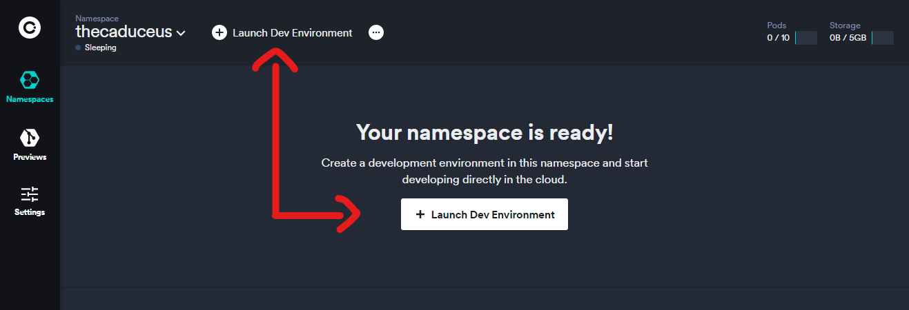3.After it, select your forked repository and select branch main and add following value carefully:
CONFIG_FILE_URL - Enter CONFIG_FILE_URL, which you just made here.
4.Once done! press "Launch" and you successfully done it! Yes 😊
5.Okteto make your deployed app to sleep if provided ENDPOINT (Allotted URL) remain untouched for 24 Hours. So lets setup a simple cron-job to keep your app active.
6.First copy your app's ENDPOINT as shown in the image and go to Cron-Job.org and sign up!
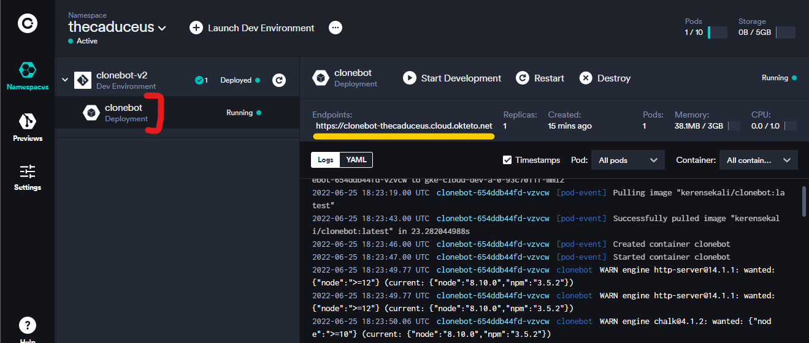 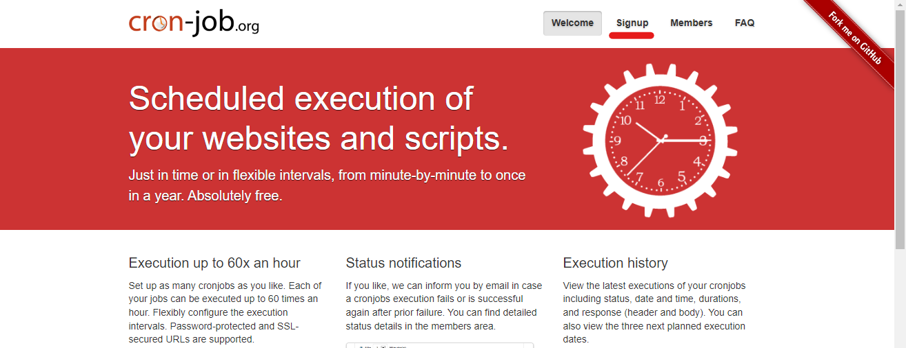7.Done? Nice! now click "CREATE CRONJOB" button and provide your copied ENDPOINT URL that you just copied and change execution schedule to every 5 minutes.Finally! click "CREATE" and you done it! 😌 Relax and use CloneBot V2 freely.
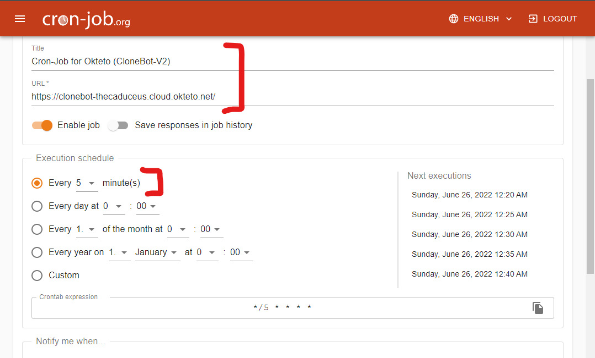⛔NOTE: Don't forget to setup Cron-Job for Okteto otherwise your deployed bot will go into sleep and you have to active it from Okteto Dashboard, while Cron-Job doing it on your behalf.
🖥️ Deploy on VPS or PC
Running CloneBot V2 on your PC or VPS is very simple and takes very less efforts! It have very less load on your System and don't use your bandwidth or Internet connection for cloning Google Drive data but only for calling Telegram APIs to update the progress or to generate required response.
1.Download Requirements:
->Python 3 or above with pip
->Git
2.Download Repository:
->git clone https://github.com/TheCaduceus/CloneBot_V2
->Or Download from Here
3.Install CloneBot_V2 Requirements:
->cd CloneBot_V2
->pip install -r requirements.txt
4.Download Gclone:
->Go to Gclone Library and download Gclone file as per your Operating System and place it in "telegram_gcloner" folder.
->Website provides direct download link, so you can also use Command-line to download Gclone.
Linux:
->curl download_link_here >> telegram_gcloner/gclone
Windows:
->curl download_link_here >> telegram_gcloner/gclone.exe
5.Edit Config.ini file
->Open Config.ini file in any text editor and enter the values of variables as written here
Or you can download your Config.ini file from external source using CONFIG_FILE_URL by using Command-line:
->curl CONFIG_FILE_URL >> telegram_gcloner/config.ini
6.Start CloneBot V2:
->cd CloneBot_V2
->python telegram_gcloner/telegram_gcloner.py
7.Stop CloneBot V2:
->Press CTRL + C keys
📱Deploy on Termux
Termux is a best app for running and using Command-line tools on Mobile, CloneBot can also be deploy on your Mobile using Termux itself, don't worry because CloneBot V2 is very lightweight and designed to be deployed even on low-end systems and thus it will not cause heavy load on your Mobile.
1.Download Termux app: Download Here
2.Choose specific code from here based on architecture of your phone.
3.Run the code you got from above and follow on-screen instructions.
🎲Deploy on Scalingo
CloneBot V2 is also deployable to Scalingo cloud, Just deploy Scalingo Branch.
Switch to Scalingo Branch for guide.
🪪 Service Accounts
Service Accounts are just like normal Google Account and thus have same Upload or Download limits as Google Account which is 750GB Upload and 10TB Download. They are used to act on behalf of a Google Account and hence we can use them to prevent hitting Google Drive limits by creating them in a bulk amount. After creating Service Accounts, we have to add them in Google Group so that we can directly add Google Group's Email ID in Shared Drive at place of adding each Service Accounts manually.
🛠️ Create Service Accounts
1.First go to Google Cloud Console and select "Create or select a project" then click "CREATE PROJECT" as shown in the image.
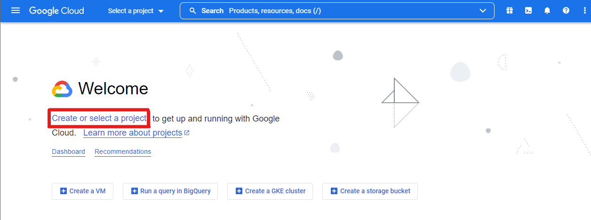 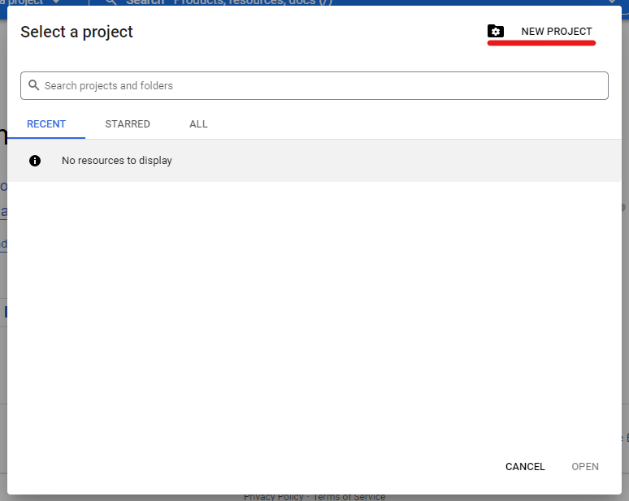2.Now give your Project Name, for location select "No organization" and click "CREATE".
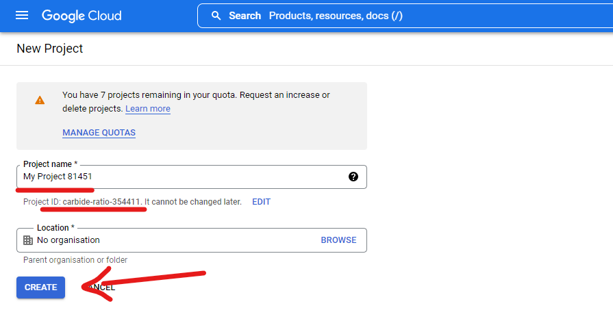3.Once your project is created! then click "SELECT PROJECT". Now click on hamburger menu and hover the cursor on "APIs and services" after which a small drop-down menu list is visible, select "Enabled APIs and services"
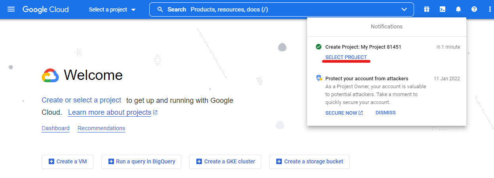 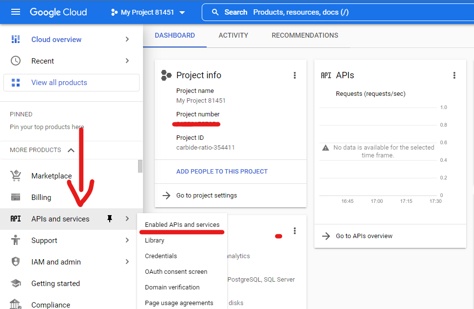4.After it, Click "ENABLE APIS AND SERVICES" button and search for "Google Drive API" in the Search bar as shown in the image.
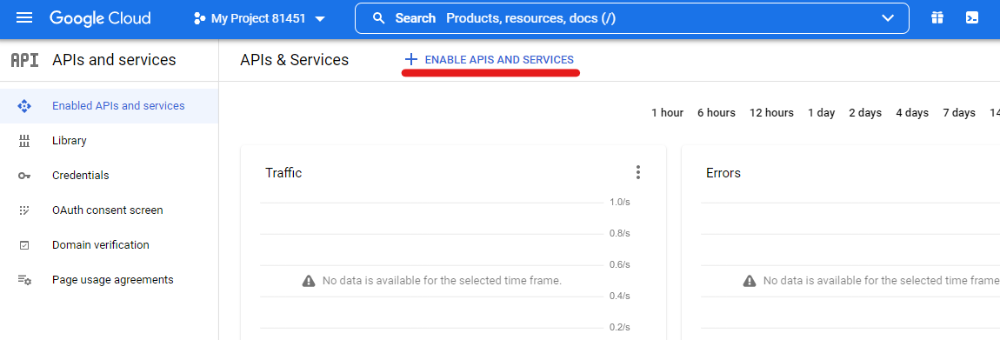
5.Open "Google Drive API" and click on "ENABLE" button to enable it for your Project.
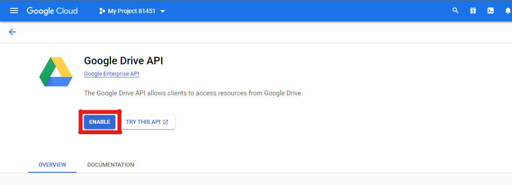6.Once Enabled, Click on "OAuth consent screen" then select "External" as "User Type" and click "CREATE" button.
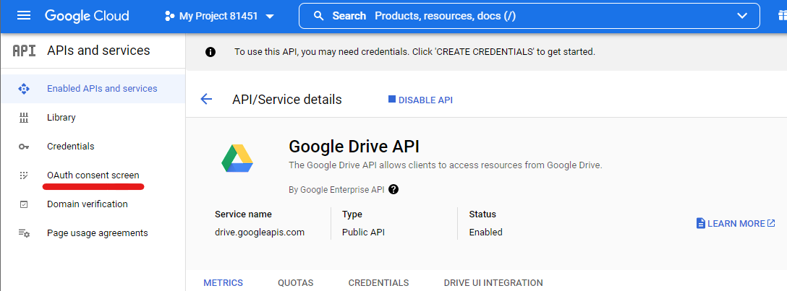 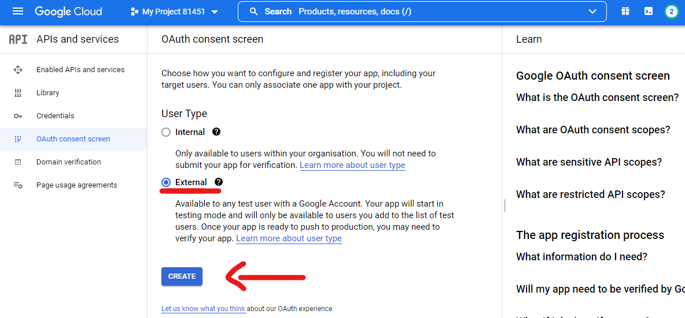7.It will now open "Edit app registration" screen, provide App Name, Support Email and Developer Email ID (Same as Support Email ID) and then click "SAVE AND CONTINUE" button.
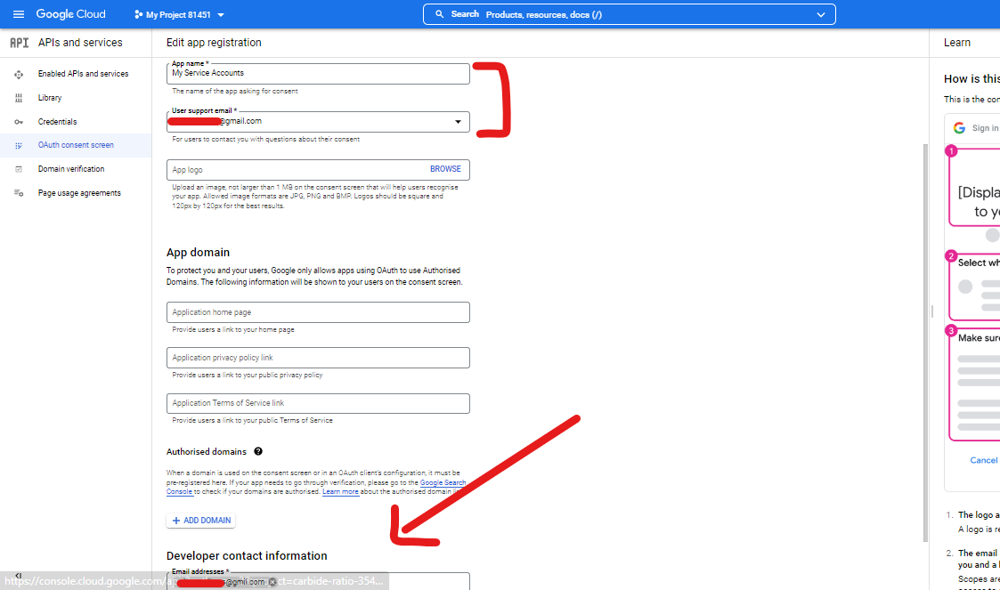8.Now it will ask you to "ADD OR REMOVE SCOPES", just ignore this and directly click "SAVE AND CONTINUE" button. Then it will ask you to "ADD USERS" again ignore it and directly press "SAVE AND CONTINUE"
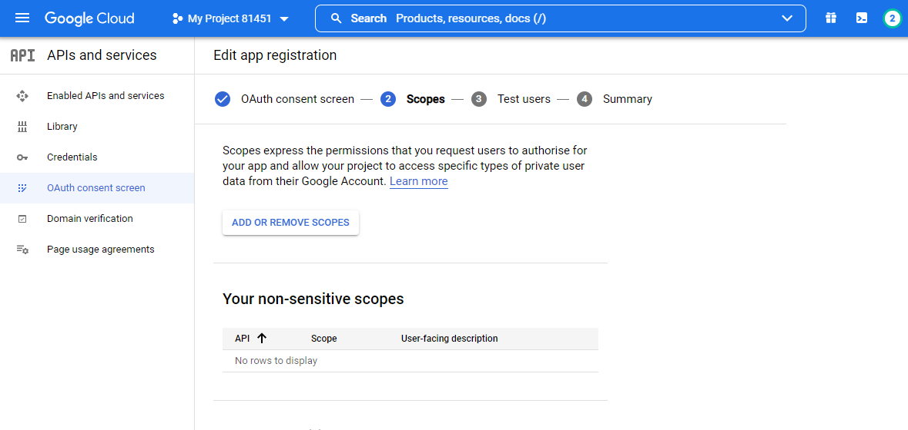 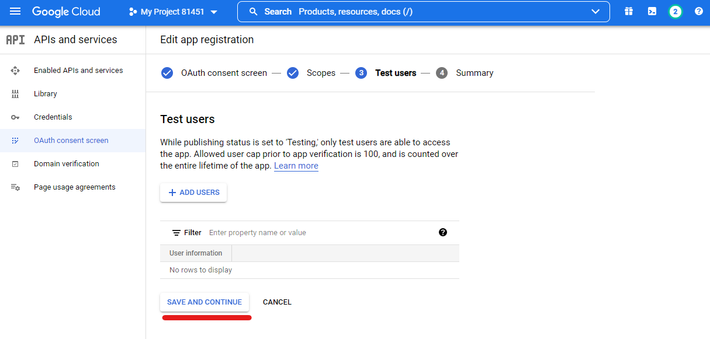9.At summary page, press "BACK TO DASHBOARD" and click "PUBLISH APP".
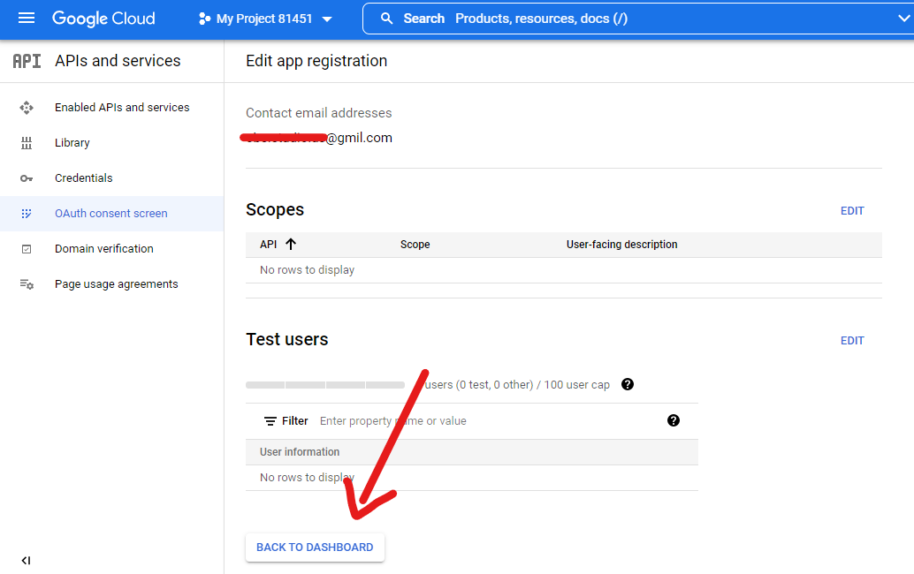 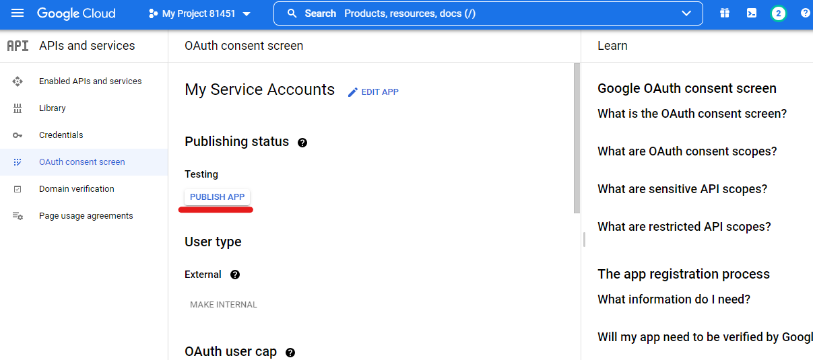10.After publishing, Select "Credentials" and click "CREATE CREDENTIALS", from drop down list select "OAuth Client ID".
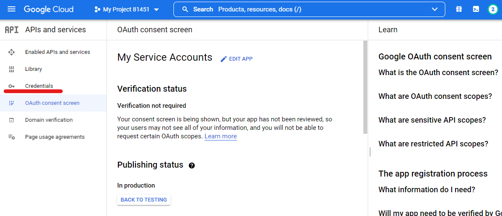 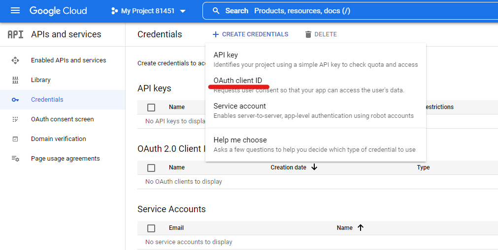11.Choose Application type as "Desktop app" and press "CREATE" button. Now create a Folder on your computer with name like "My Service Accounts", and then from pop-up click "DOWNLOAD JSON". Download the json file as credentials.json in the folder you just created.
⛔NOTE: Download json file as credentials.json only!
12.Once downloaded, now download some required python scripts from here and extract it. Then move gen_sa_accounts.py rename_script.py as well as requirements.txt files to folder in which you downloaded credentials.json.

13.Before we proceed further, please confirm you have installed Python (with pip) carefully. Not downloaded yet? Download Now!
14.All Ready? Type "cmd" in the address bar of folder which you created in STEP 11 and hit ENTER or as an alternative of this, you can use cd command like cd FOLDER_PATH in CMD.
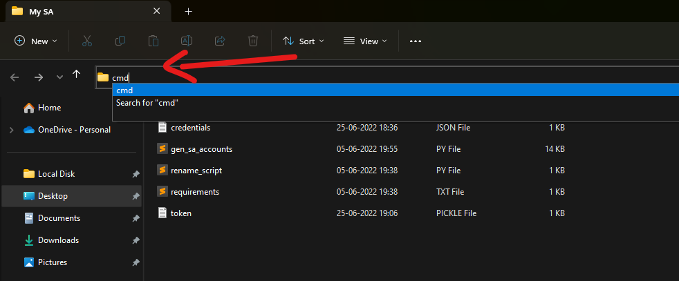
15.Now run following commands carefully in CMD one-by-one:
1. pip install -U -r requirements.txt - To install requirements.
2. py gen_sa_accounts.py - To get login URL.
16.Running command 2 will give you a Login URL, just copy & paste it in your URL and login using your Google Account and provide all asked permission.
⛔NOTE: Login only with Google account which you used to create Project on Google Cloud Console.
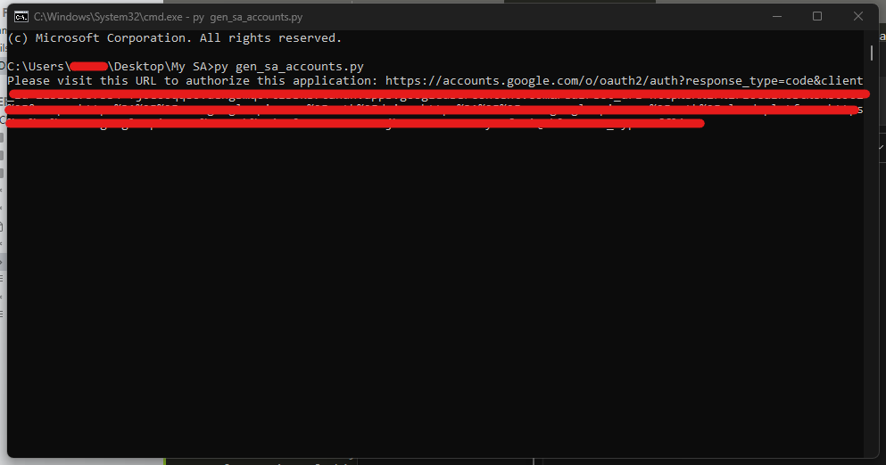 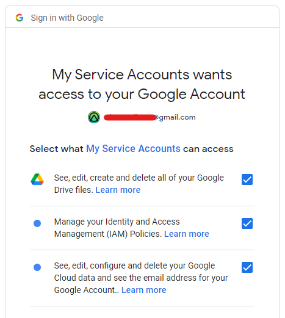17.Back to CMD screen, run following commands carefully one-by-one:
3. py gen_sa_accounts.py --list-projects - To get the ID of your created Project.
4. py gen_sa_accounts.py --enable-services PROJECT_ID - To Enable Services in given project.
5. py gen_sa_accounts.py --create-sas PROJECT_ID - To create Service Accounts.
6. py gen_sa_accounts.py --download-keys PROJECT_ID - To download Service Accounts file.
7. py rename_script.py - To rename Service Accounts file in 1-100 sequence.
⛔NOTE: Replace PROJECT_ID with Project ID which you will get from command 3 and if commands not working then replace py with python or python3.
18.Till now, We have created 100 Service Accounts but we have to do some more work before we take them in our use. Open folder which you created in STEP 11 and you will see accounts folder in it which have your 100 Service Accounts file (json files), now type "Powershell" in address bar of accounts folder or as an alternative you can use cd commands like cd FOLDER_PATH in Powershell.
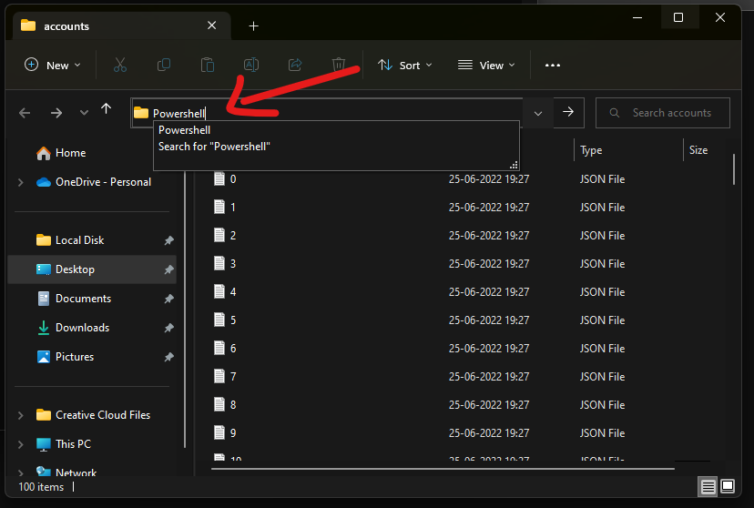
19.Done? Now run following command in Powershell:
8. $emails = Get-ChildItem .\**.json |Get-Content -Raw |ConvertFrom-Json |Select -ExpandProperty client_email >>emails.txt
20.Above command collects the EMAIL-ID of all your Service Accounts available in accounts folder into emails.txt file. Move emails.txt file from accounts folder to prevent confusion or any other problem.
🌐 Adding in Google Group
21.Last work! we have to add them in a Google Group and have to add that Google Group in a Shared Drive to give read + write permission to all Service Accounts at once. Go to Google Groups and press "Create group" button to create a group.
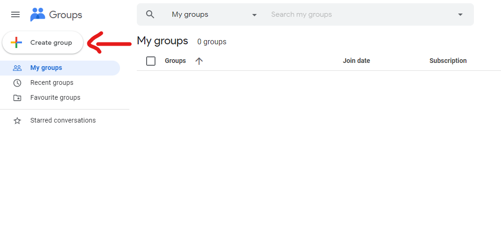22.In pop-up, fill up details of your Google Group like Name and Email ID as shown in the image then press "Next". After it, let privacy settings as it is and again click "Next"
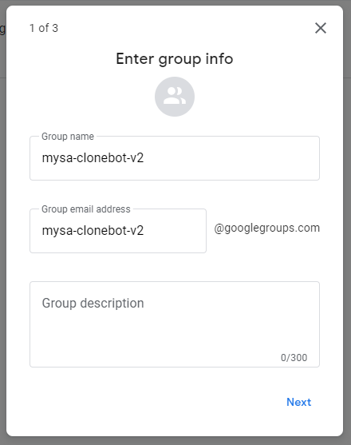 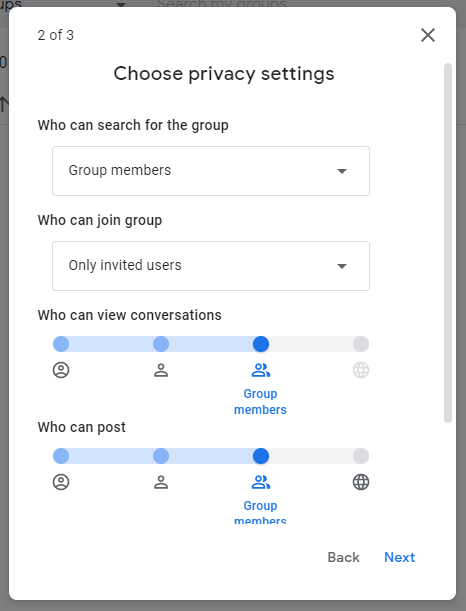23.Once done, it will ask you to "Add Members" in your Group as shown in the image,just ignore it and directly press "Create Group". Now open your Google Group and select "Members" from sidebar and click "Add Members"
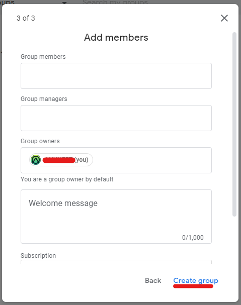 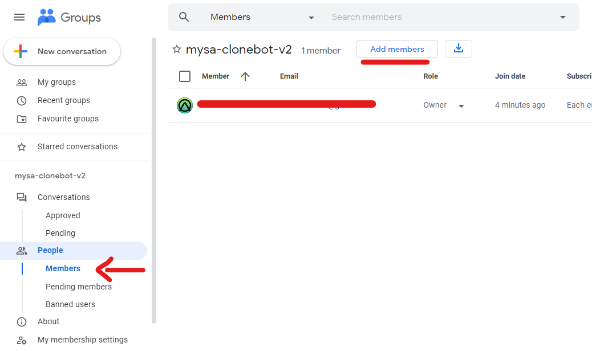24.In the pop-up shown, enable "Directly add members" and open emails.txt file which you got from STEP 19 then copy & paste 10 Email IDs in the field named "Group Managers". In this way! add all 100 Email IDs in your Google Group but only 10 Email IDs at once.
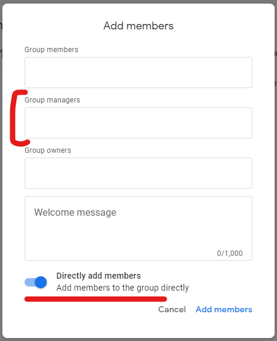
25.After adding all Email IDs of your Service Accounts, now copy the Email ID of your Google Group which looks like XXXXX@googlegroups.com and add it in your Shared Drives as "Manager".
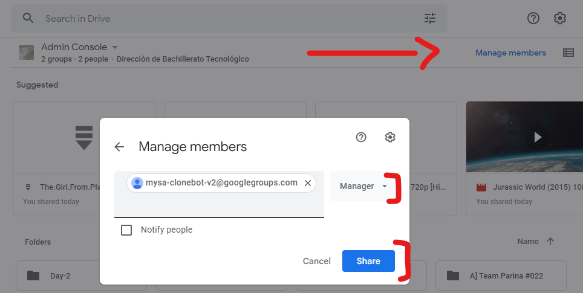
26.Finally! We have created 100 Service Accounts and also added them in Google Group. Each Service Account have 750 GB Upload/Clone limit and 10 TB Download limit that means now we can upload/clone 75 TB and can download 100 TB a day.
⛑Contact Us!
Join my Update Channel on Telegram: Join Now!
Special Torrent Group on Telegram: Dr.Torrent
Directly Contact the Developer using Telegram @HelpAutomatted_Bot
❤️Credits & Thanks
🔥CloneBot V2:
Dr.Caduceus: For making this Project and Guide.
Levi: For Gclone and upgrading it.
⚡CloneBot:
wrenfairbank: For the original python script.
smartass08: To adapt the scrip to heroku.
anymeofu: For making the Direct Heroku deployable Version.
Zero-The-Kamisama: To making MsGsuite discover this amazing bot and the detailed instructions.
zorgof: For the termux script.
Aishik Tokdar: For Adding Guide to Deploy on Railway.app , Qovery , Clever Cloud , Scalingo and some other Code Improvements.Also Added Heroku Workflow Deployment Method.
Katarina: For adding the ability to be deployed to Clever Cloud and Scalingo.
Miss Emily: For adding Support of Okteto Cloud Deployment as well as improving little layout.